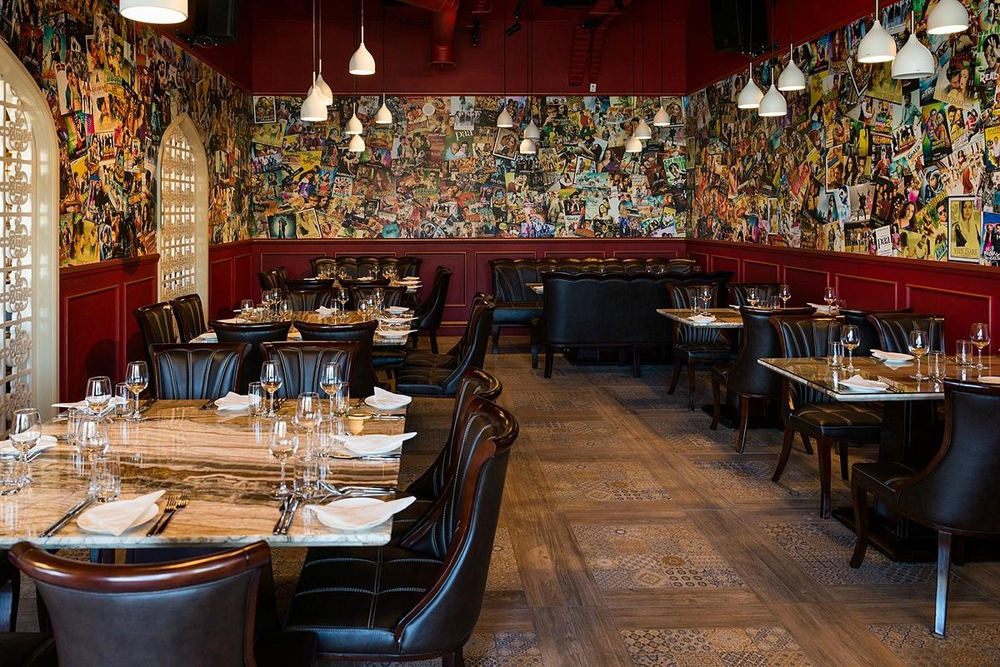

Fiordland offers a large array of different types of cuisine, ranging from New Zealand all the way to the heart of Asia.
We offer plenty of different vegenetarian options that's sure to leave a nice taste in your mouth.

Fiorland Foods
Destination Fiordland offers many bars and restaurants to bring your buddies, your friends and your family.
Plenty restaurants like Grand Eatery offer a wide range of foods from different types of cultures, so you know you aren’t missing out!